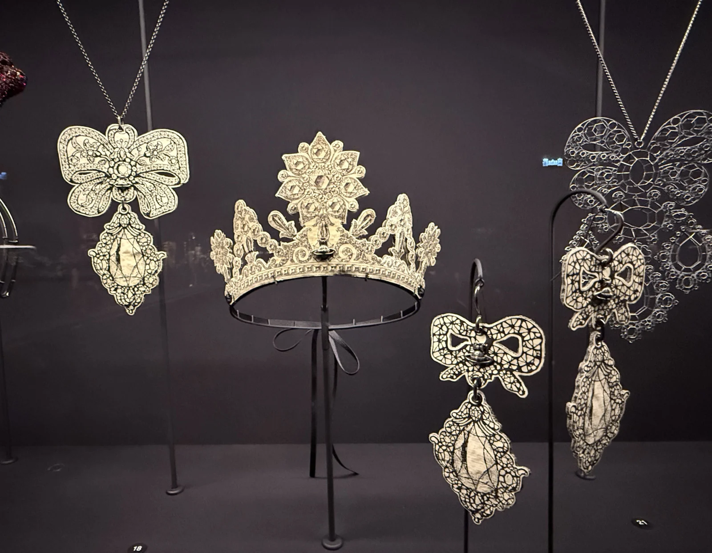

Joyas
La joyería de Vivienne Westwood representa uno de los pilares más lucrativos y culturalmente significativos de la marca, funcionando como el puente perfecto entre la rebeldía contracultural del punk y el maximalismo de la aristocracia británica. Concebidas originalmente no como piezas preciosas de alta gama, sino como bisutería de pasarela con una carga conceptual irreverente, estas creaciones han redefinido el uso de los accesorios en la moda contemporánea mediante la utilización de materiales accesibles como el latón, la plata de ley, el vidrio y los cristales de imitación, demostrando que el verdadero valor de una joya reside en la fuerza de su iconografía. El alma indiscutible de toda esta línea es su emblemático logotipo, conocido mundialmente como The Orb (La Órbita); creado a mediados de la década de 1980, este símbolo nació de manera casi accidental cuando la diseñadora buscaba combinar insignias de la realeza británica —como la corona y el orbe del soberano de la coronación de Carlos II, con los anillos astronómicos del planeta Saturno, logrando una metáfora visual perfecta de su filosofía de tomar la tradición histórica del pasado y propulsarla de manera futurista. La consagración definitiva de esta identidad visual llegó en la colección de pasarela Portrait de 1990 con el lanzamiento de la famosísima gargantilla Mini Bas Relief Choker, una pieza disponible en versiones de una o tres hileras de perlas de vidrio anudadas a mano que se unen en una placa central con la forma de la órbita completamente recubierta de cristales brillantes, subvirtiendo un accesorio históricamente asociado a las clases altas conservadoras para transformarlo en una declaración de poder y vanguardia urbana. En la actualidad, esta línea de joyería experimenta un renacimiento masivo y transversal sin precedentes, impulsada tanto por su presencia de culto en el anime y manga japonés "Nana" como por su adopción viral en redes sociales por parte de las nuevas generaciones e íconos de la cultura pop global, consolidando el legado de las joyas de Westwood como un fenómeno de culto atemporal y unisex capaz de transformar cualquier atuendo ordinario en un manifiesto de actitud.
